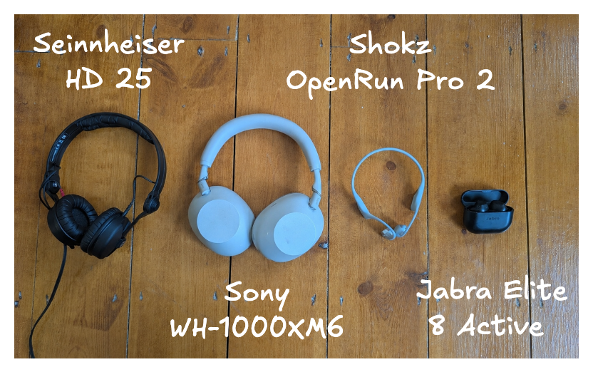

I lean minimalist. Everything I own must pay rent, in terms of storage space, mental clutter, faff in moving it whenever I next end up moving, etc. I pretty regularly realise some item I own isn't paying rent, and evict it.
As such, I was surprised to see that I had ended up with 4 different pairs of headphones. Here they are:

With more thought, it made sense. Each pair earns its slot by being best-in-class in some dimension that I care about. Here is a table justifying this claim:
| Type | Product | Bulk | Noise cancellation | Ability to hear surroundings | Audio latency | Use cases |
|---|---|---|---|---|---|---|
| In-ear, wireless | Jabra Elite 8 Active | Low | Medium | Medium | High | Out without a bag (low bulk means easy to stuff in pocket); the gym (low bulk means low sweat). |
| Over-ear, wireless | Sony WH-1000XM6 | High | High | Medium | High | Loud offices, loud flights (high noise cancellation). |
| Open-ear, bone conduction, wireless | Shokz OpenRun Pro 2 | Medium | Low | High | High | Running on roads, cycling (high ability to hear surroundings). |
| On-ear, wired | Sennheiser HD 25 | High | Medium | Low | Low | DJing (low audio latency is important for beat matching). |